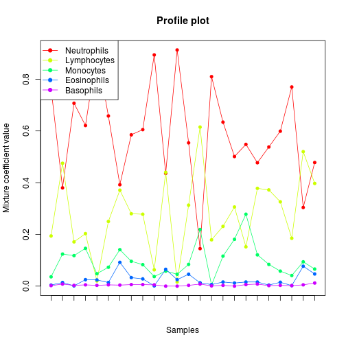
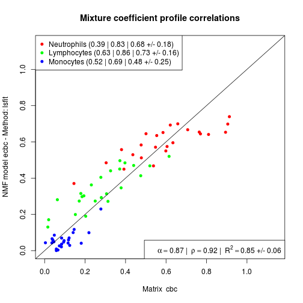

gedBlood(object, ..., normalize = TRUE, verbose = FALSE) asCBC(object, ...) S4 (character) `asCBC`(object, drop = FALSE, quiet = FALSE) S4 (NMF) `asCBC`(object, drop = TRUE, ...) refCBC gCBC(n = 1, sampleNames = NULL, counts = NULL)
ged. For asCBC, an
object for with suitable asCBC method defined.gedProportions.object that cannot be mapped to a cell type should
be removed from the returned mapping.FALSE, then an
error is thrown if none of the elements can be mapped,
or, if in addition drop=FALSE, a warning is thrown
if only some of the elements could be mapped.n.verbose=Inf toggles debug mode (all messages).
Note that because it appears after ... it must be
fully named.Named num [1:5] 0.005 0.295 0.03 0.57 0.1 - attr(*, "names")= chr [1:5] "Basophils" "Lymphocytes" "Eosinophils" "Neutrophils" ...
The functions described here are dedicated to gene expression deconvolution of blood samples (i.e. whole blood or PBMCs).
gedBlood uses the methodology defined by
Abbas et al. (2009), which uses a fixed set of 17
cell type-specific signatures to estimate cell
proportions in blood samples. Each signature corresponds
to a white blood cell in resting or activated state (See
section Details).
asCBC has methods defined for NMF models
and Markerlist objects. See each method's
description for more details.
refCBC is a numeric vector that contains average
Complete Blood Count proportions (CBC) in healthy
persons, based on empirical studies in healthy patients.
It contains proportions for Basophils, Lymphocytes,
Eosinophils, Neutrophils and Monocytes.
gCBC generates a matrix of average Complete Blood
Count proportions (CBC) for a given number of samples.
The default proportions are based on empirical studies in
healthy patients (see refCBC), and each
sample get assigned the same proportions.
The signatures used by gedBlood were designed by
Abbas et al. (2009) to optimise their
deconvolution power. They are available in the
CellMix as dataset Abbas.
gedBlood is essentially a shortcut for
gedProportions(object, Abbas, ...), see
gedProportions for details on the possible
arguments.
Currently asCBC methods will correctly work only
on objects that have cell types that match exactly names
of signatures in the Abbas dataset.
signature(object = "character"): This
is the workhorse method that maps immune/blood cell type
names to the CBC cell types: Monocytes, Basophils,
Lymphocytes, Neutrophils and Eosinophils.
It returns a factor, whose names are elements of
object and the values are their corresponding CBC
cell type. If drop=FALSE the result is of the same
length as object, otherwise it only contains
elements that could be mappped to a cell type.
signature(object = "NMF"): The result
of gene expression deconvolution performed by
ged are stored in
NMFstd-class model objects, which contain
the cell type-specific signatures and/or cell relative
proportions.
This method aggregates, i.e. sums up, the cell proportions and averages the signatures of cell types from each of the CBC groups that are available in the data.
signature(object = "MarkerList"):
This method combines markers of cell types that belong to
the same CBC group.
Abbas AR, Wolslegel K, Seshasayee D, Modrusan Z and Clark
HF (2009). "Deconvolution of blood microarray data
identifies cellular activation patterns in systemic lupus
erythematosus." _PloS one_, *4*(7), pp. e6098. ISSN
1932-6203,
# load kidney transplant data (Shen-Orr et al. (2010))eset <- ExpressionMix('GSE20300')# true CBC proportions are stored as -- mixture -- coefficientscbc <- coef(eset)head(cbc)GSM508883 GSM508884 GSM508885 GSM508886 GSM508887 GSM508888 Neutrophils 0.764 0.380 0.707 0.621 0.905 0.658 Lymphocytes 0.194 0.475 0.171 0.203 0.020 0.250 Monocytes 0.036 0.124 0.118 0.146 0.048 0.073 Eosinophils 0.004 0.014 0.001 0.025 0.024 0.014 Basophils 0.002 0.008 0.003 0.005 0.003 0.005 GSM508889 GSM508890 GSM508891 GSM508892 GSM508893 GSM508894 Neutrophils 0.392 0.585 0.605 0.894 0.436 0.913 Lymphocytes 0.371 0.280 0.278 0.063 0.440 0.016 Monocytes 0.141 0.096 0.083 0.037 0.058 0.046 Eosinophils 0.092 0.033 0.028 0.001 0.065 0.025 Basophils 0.004 0.006 0.006 0.005 0.000 0.000 GSM508895 GSM508896 GSM508897 GSM508898 GSM508899 GSM508900 Neutrophils 0.554 0.145 0.810 0.634 0.501 0.548 Lymphocytes 0.313 0.615 0.179 0.231 0.306 0.152 Monocytes 0.084 0.219 0.004 0.116 0.181 0.278 Eosinophils 0.046 0.013 0.006 0.016 0.012 0.016 Basophils 0.003 0.008 0.001 0.003 0.000 0.006 GSM508901 GSM508902 GSM508903 GSM508904 GSM508905 GSM508906 Neutrophils 0.477 0.538 0.599 0.770 0.304 0.478 Lymphocytes 0.378 0.372 0.326 0.185 0.520 0.397 Monocytes 0.121 0.084 0.058 0.041 0.094 0.066 Eosinophils 0.016 0.004 0.015 0.002 0.077 0.047 Basophils 0.008 0.002 0.003 0.002 0.005 0.012profplot(cbc, lab='')
# devonvolve using basis signature matrix from Abbas et al. (2009)res <- gedBlood(eset, verbose=TRUE)Loading basis signature from Abbas et al. (2009) ... OK [359 features x 17 cell types] Mapping signature ids onto target ids (method: auto) ... OK [322 features x 17 cell types] Limit/reorder to common set of features ... OK [322 features x 17 cell types] Checking data dimension compatibility ... OK [322 features x 17 cell types] Checking log-scale ... data:YES - signatures:NO Applying log-transform to signatures (base 2) ... OK Normalizing signatures and target together (method: quantiles) ... OK Using ged algorithm: “lsfit” Estimating cell proportions from cell-specific signatures [lsfit] Timing: user system elapsed 0.872 0.028 0.901 GED final wrap up ... OK# estimated proportions are stored as -- mixture -- coefficientsp <- coef(res)str(p)num [1:17, 1:24] 0.0622 0 0.0826 0 0.0366 ... - attr(*, "dimnames")=List of 2 ..$ : chr [1:17] "Th" "Th act" "Tc" "Tc act" ... ..$ : chr [1:24] "GSM508883" "GSM508884" "GSM508885" "GSM508886" ...# the Abbas basis matrix includes detailed immune cell typesrownames(p)[1] "Th" "Th act" "Tc" "Tc act" "B" "B act" [7] "B aIgM" "Mem IgG" "Mem IgM" "PC" "NK" "NK act" [13] "mono" "mono act" "DC" "DC act" "neutro"# or: basisnames(res)# aggregate into CBCecbc <- asCBC(res)# plot Estimated vs. Measured CBCprofplot(cbc, ecbc)
# default proportionsgCBC()[,1] Basophils 0.005 Lymphocytes 0.295 Eosinophils 0.030 Neutrophils 0.570 Monocytes 0.100# for 5 samplesgCBC(5)[,1] [,2] [,3] [,4] [,5] Basophils 0.005 0.005 0.005 0.005 0.005 Lymphocytes 0.295 0.295 0.295 0.295 0.295 Eosinophils 0.030 0.030 0.030 0.030 0.030 Neutrophils 0.570 0.570 0.570 0.570 0.570 Monocytes 0.100 0.100 0.100 0.100 0.100# setting sample namesgCBC(5, sampleNames = letters[1:10]) # names are truncated if necessarya b c d e Basophils 0.005 0.005 0.005 0.005 0.005 Lymphocytes 0.295 0.295 0.295 0.295 0.295 Eosinophils 0.030 0.030 0.030 0.030 0.030 Neutrophils 0.570 0.570 0.570 0.570 0.570 Monocytes 0.100 0.100 0.100 0.100 0.100